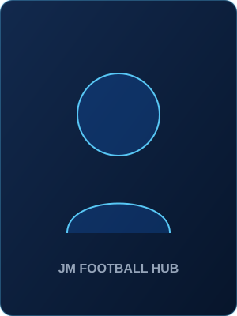

Seu universo de futebol começa aqui.
Você ainda não possui cartas cadastradas no JM Football Hub. Adicione sua primeira carta do eFootball Mobile com imagem, overall, posição e tipo para começar a construir seu elenco.
Evolução da Plataforma
Espaços preparados na arquitetura para as próximas versões
Campo e Escalação
Montagem tática com marcadores ovais dinâmicos, troca rápida de posições e preservação total do formato das cartas.
Registro de Partidas
Histórico detalhado de confrontos Online e contra IA registrando exatamente qual carta foi utilizada em campo.
Estatísticas Avançadas
Desempenho separado por jogador e por versão específica de carta (gols, assistências, MVPs e aproveitamento).
Meu Elenco
Gerencie, pesquise e organize todas as suas cartas ativas do eFootball
Central de Cartas
Cadastre novas cartas do eFootball com preservação total da imagem original
Cadastrar Nova Carta
Manual • eFootballPrévia da Carta
Proporção original preservada
Nome do Jogador
💡 Você pode cadastrar várias cartas do mesmo jogador (ex: Messi Epic 103 e Messi Big Time 105). Cada carta recebe um identificador único no banco de dados.
Formações e Escalação Tática
Este módulo está previsto para a Versão 2.0 do JM Football Hub. Permitirá montar seu time em campo com formações nativas do eFootball, formações personalizadas e marcadores ovais dinâmicos que preservam integralmente o formato das suas cartas.
Registro de Partidas
Este módulo está previsto para a Versão 3.0 do JM Football Hub. Você poderá registrar partidas Online e contra IA, placares, gols, assistências, MVP e exatamente quais cartas entraram em campo, mantendo o histórico protegido mesmo se uma carta for editada ou arquivada depois.
Estatísticas Gerais e por Carta
Este módulo está previsto para a Versão 4.0 do JM Football Hub. Apresentará aproveitamento, média de gols, artilheiros, assistências e comparação detalhada entre o desempenho geral de um jogador e cada uma de suas cartas específicas.
Configurações e Backup
Proteja seus dados, exporte backups completos com imagens e restaure com segurança
Exportar Backup Completo
JSON + ImagensGera um arquivo de segurança contendo todas as suas cartas cadastradas (ativas e arquivadas), as imagens originais armazenadas no IndexedDB e a estrutura completa do aplicativo.
jm_football_hub_db_v1Restaurar Backup
Validação Segura
Selecione um arquivo .json exportado anteriormente pelo JM Football Hub. O sistema validará a integridade do arquivo antes de aplicar qualquer alteração.
⚠️ O IndexedDB armazena dados localmente neste dispositivo. Faça backups regulares para transferir seus dados entre celular e computador.
Sobre o JM Football Hub
Versão 1.0
JM Football Hub — Seu time. Sua história. Seus números.
Arquitetura modular independente preparada para evolução contínua no ecossistema de futebol virtual.